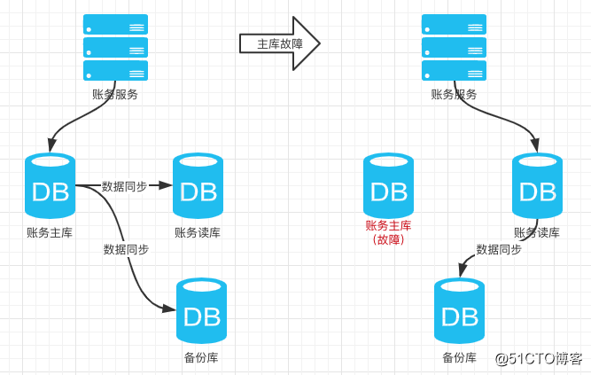
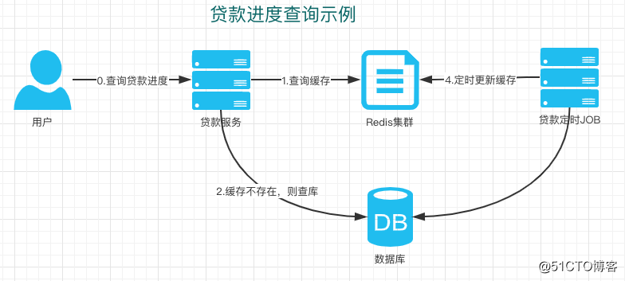
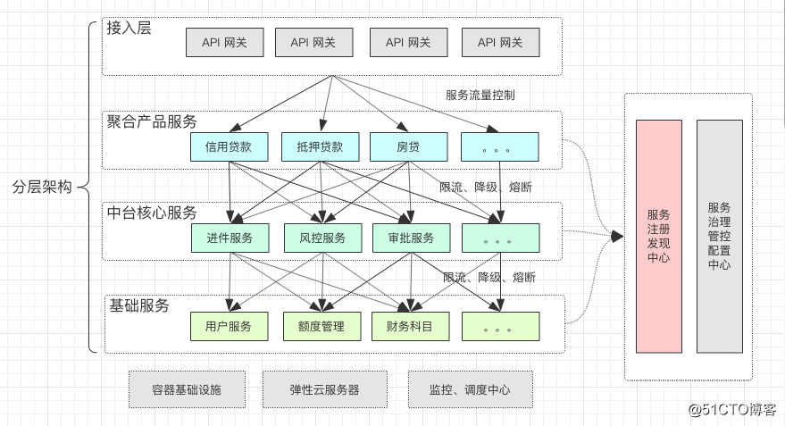
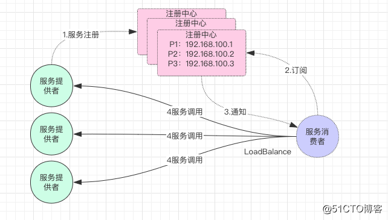
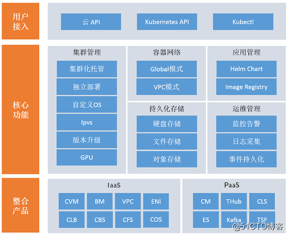
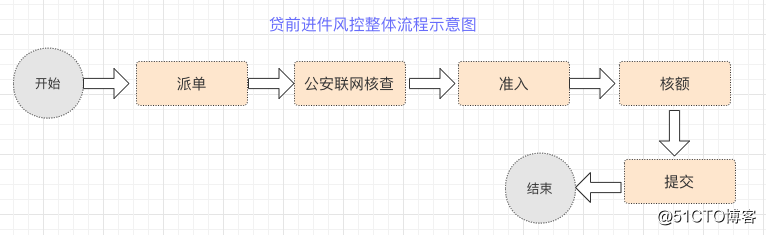
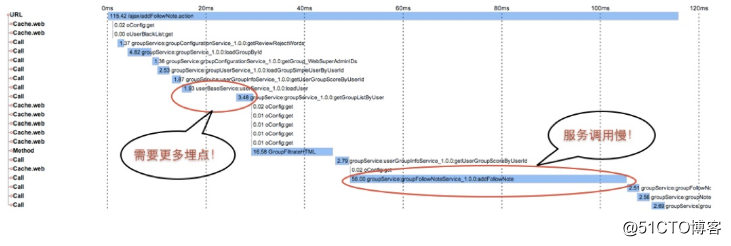
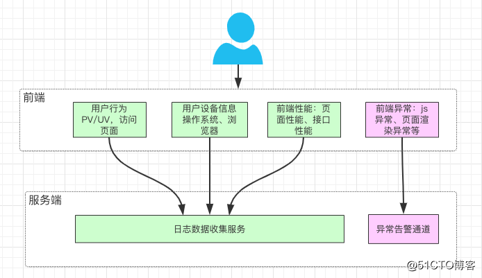

01 互联网消费金融高并发架构设计体系的设计原则
互联网消费金融架构的特性
近年来互联网金融蓬勃发展，在借贷、保险、股权等领域涌现出一大批互联网与金融场景相结合的创新产品。同时作为互联网金融的子领域消费金融领域，在国家消费升级战略下，各大平台推出了如花呗、借呗，微粒贷等众多服务。
根据第三方机构预统计，自2016年-2019年，我国零售信贷规模维持20%以上的高复合增长率，2017年中国零售信贷规模达到27万亿，到2019年，总规模超过37万亿。

互联网金融的架构有别于传统金融系统，互联网金融产品依托于互联网的众多技术特性，主要包括三大主要方面：
1）互联网高并发软件平台化特性 2）基于大数据的场景的智能化风控体系 3）基于高弹性的云计算基础设施建设
在互联网浪潮的背景下，传统银行、金融行业也有着转型的诉求，并在股权、借贷、保险等方面都需要创新。有些是业务从线下转线上，有些是金融零售化转型。随着互联网金融业务的爆发增长，建设一个高并发、高可用、高弹性的互金平台是每个金融从业的IT技术人员面临的挑战。
互联网消费金融高并发架构面临的挑战
在传统金融的领域里，架构的特点往往是保守的，除了技术相对陈旧以外，更多是要求系统更高的稳定性，低风险，低维护等。

银行、金融机构在面对互联网化的高速业务发展，往往会陷入技术与基础建设的泥潭，一方面在软件平台建设时银行、金融传统系统的高可用、低风险、低风险特性与互联网产品的高并发、高性能、高扩展/高弹性存在一定的冲突，另一方面在基础设施建设方面，相比互联网的云计算平台，存在天然的先天不足。
所以，我们的架构设计，需要结合两者的特性，综合考虑，既要兼顾传统金融行业的特性，又要承载互联网高并发高弹性等特性，这样使我们面临到巨大的挑战：
1）对于架构师来说，前期的技术架构设计和领域规划，需要同时具备对传统金融领域知识和互联网高并发架构的双重能力；
2）对于研发、测试、运维人员来说，系统的复杂度成倍的增长，微服务拆分后，系统研发、测试、运维难度大大增加；
3）当出现线上问题时，排查问题和分析错误，也变得复杂，需要依赖庞大的监控体系和log分析工具。
如何在构建一个高并发互联网架构的基础上，同时兼顾金融行业的特性，让金融IT技术从业者面临着巨大的挑战。而且金融行业的高安全、银保监会监管合规方面的要求，也让高并发的互联网架构在实施起来步履蹒跚。
高并发场景下的安全设计
互联网金融的安全要求
金融行业的安全性要求，是架构设计时不可忽视的问题。总的来说，包括以下四个方面： 1）数据安全：
- 数据不丢失
- 数据加密
- 数据准确性
2）物理安全：
- 物理机的隔离规划
- 重要的交易服务与普通服务的网络隔离
3）网络安全
- 网络加密
- 防火墙的建设等
4）业务安全
- 反欺诈
- 防恶意操作
- 交易过程防篡改
互联网金融高并发场景下的条件竞争安全设计
在互联网金融的高并发场景下，涉及到资金方面安全的问题尤为重要。服务端在做并发编程时，往往需要考虑到竞争条件的情况。在多个并发线程同时访问同一资源时，由于对请求的处理不是原子性的，无法预测调度的顺序，就可能由于时间序列上的冲突而造成对共享资源的操作混乱。
条件竞争安全漏洞危害
通过高并发操作触及程序处理临界区，绕过程序线性执行顺序，使原有的逻辑限制失效。经典场景有：
- 超额取款，提现
- 重复兑换积分
- 多次领取优惠券
- 使用相同优惠券、积分多次下单等


条件竞争安全漏洞解决方案
- 在程序处理时使用时序队列
- 在更新数据库数据时使用数据库锁（乐观锁）
- 针对数据库使用分布式锁
互联网金融的合规性的设计原则
合规、监管要求 在对互联网金融项目建设时，根据金融行业特性，必须在建设范围进行法律、法规的研讨和设计，确定要关注及合规部门银保监会的监控要求限制。
对于新的业务流程或不确定的业务规则，必须通过银行合规、法律部门等会签通过，确保系统遵循合规条件。法律法规的参考相关地址：
1）. 中国政府政策网页http://www.gov.cn/zhengce/zhengcewenjianku/index.htm 2）. 中华人民共和国公安部政策https://www.mps.gov.cn/n6557558/index.html 3）. 中华人民共和国国家知识产权局法规http://www.sipo.gov.cn/zcfg/index.htm 4）. 中国银行保险监督管理委员会http://www.cbirc.gov.cn/cn/view/pages/index/index.html
高并发消费金融架构重点指标的核心设计理念
在构建一个高并发金融架构时，我们往往会考虑很多因素，从系统平台建设的角度来讲，会优先关注以下重点指标的建设：
1）高可用 2）高并发 3）高性能 4）高弹性
互联网金融高可用设计原则
对于互联网金融架构系统来说，涉及到以资金交易为核心的业务领域，最重要的指标是高可用。
高可用HA（High Availability）是分布式架构设计中必须考虑的因素之一，它通常的是指，通过设计减少系统不能提供服务的时间。
高可用的指标 我们通常会形容高可用如：
- 不能“挂”
- 可用性99.99%四个九
- 一年故障时长0.876小时
- 平均响应时间<10ms，95线<50ms
- 全年数据故障不超过5次
- 全年系统100%可用
如何保证高可用
保障系统的高可用，有两大架构设计的原则：
- 多副本设计：
避免单点问题，对各个系统特别是涉及到交易、账务的核心系统进行多副本设计，对数据库进行多库备份和读写分离。如果有了多副本，在某个单点出问题时，副本可以发挥作用。架构设计以“集群化”的方式，保障架构的高可用。
- 自动故障转移：
在有了多副本的建设的前提下，前面已经说到，互联网金融的架构体系相比传统系统复杂度高，所以在系统出问题时，我们必须引入故障自动转移机制，避免手工和人工的干预，能够高效率的自动化的切换至副本服务或数据库。

高可用服务网关建设 互联网金融的网关的建设，有以下好处：
- 对金融安全性方面把关，涉及到数据的加解密工作和身份认证鉴权工作；
- 对流量进行管控和切换，保障核心系统始终处于可用状态，对异常节点进行剔除；
- 限流降级异常流量拦截，保护核心系统。

高可用数据库设计 在金融行业，数据的重要性不言而喻，为保障数据库的高可用，我们一般有：
- 读写分离设计；
- 主备库设计；
- 使用分布式数据库服务等。

提到数据库的多副本设计，如读写分离和主备库设计，这就涉及到数据同步的问题了。同步的方式有很多，现在很多云服务厂商也提供了很多配套工具，进过封装之后的服务，可以傻瓜式的上手。 对于自建的服务来说，我们常常会考虑通过MQ（如RocketMQ）进行异步同步，或者解析MYSQL的binlog等方式进行数据同步。
互联网金融高并发设计
互联网金融的场景下，在高可用的基础上，对于高并发的要求是必不可少的。为满足日益剧增的用户增长和交易量，往往需要在架构设计时，考虑高并发的特性。
高并发的指标
我们通常会通过很多方式来衡量说明一个高并发系统的架构设计，如：
- 通过设计来保证系统能够同时处理很多的事情，比如亿级并发支付交易，百万级并发保单下单等
- 低响应时间：系统对请求作出的响应时间维持在一个较低的水平，通常不超过3秒。例如系统处理一个HTTP请求需要200ms，这个200ms就是系统响应时间。
- 高吞吐量：单位时间内处理的请求量。
- QPS：每秒响应请求数。在互联网领域，这个指标和吞吐量区分的没那么明显。
- TPS：每秒处理的事务数。
- 并发用户数：同时承载正常使用系统功能的用户数量。例如一个即时通讯系统，同时在线量一定程度上代表了系统的并发用户数。
如何提升系统的并发能力
1） 提升系统的单机处理能力
垂直扩展的方式有两种：
增强单机硬件性能，例如：增加CPU的核数，由8核扩展到16核；升级更好的网卡，由千兆网卡升级到万兆网卡；升级更好的硬盘，如SSD；扩展硬盘的容量，如由500G升级到10T；扩展系统内存，如由16G升级到64G等。
提升单机的架构性能，例如：引入缓存机制Redis来减少IO次数；引入消息队列机制，来削峰填谷，用异步处理来增加单服务的吞吐量；用轻量级架构来减少服务的处理时间等。

2）提升系统的横向扩展能力
系统单机的处理能力总是有极限的，我们可以通过增加服务器数量的方式，来线性扩充系统的性能。
互联网金融高性能设计
在互联网金融分布式架构中，高性能是一项涉及众多方面因素的系统工程，并不是单一高新技术和设备的简单应用或堆叠，应该进行合理的规划与优化设计，以适合用户在性能、成本等方面对系统建设的综合需求。
高性能的指标
高性能的指标通常有：
1）通过合理的架构设计，实现互联网金融系统高吞吐、低延时（相对时间）。 2）可用性指标计算：平均相应时间、95线的响应时间、99线的响应时间。
如何提升系统的性能 互联网金融系统，涉及到各方面的性能问题，如：系统软件平台服务的性能，网络和硬件的性能，数据库及存储的性能等。
1）微服务化设计
将对庞大金融服务进行领域规划，将臃肿的系统进行拆分解耦，将每一个模块进行解耦，把每个服务都尽可能做成无状态化，每个独立模块均可以作为一个微服务，这样每个微服务的关联性都比较小，每一个微服务都可能做到最大化的性能。
备注：微服务技术和消费金融领域的规划，我们会在后面的章节再独立介绍。

2）CDN加速技术
互联网消费金融的产品，涉及到众多前端，使用CDN缓存技术，能大大提升用户的产品体验。
CND加速将网站的内容缓存在网络边缘（离用户接入网络最近的地方），然后在用户访问网站内容的时候，通过调度系统将用户的请求路由或者引导到离用户接入网络最近或者访问效果最佳的缓存服务器上，由该缓存服务器为用户提供内容服务；相对于直接访问源站，这种方式缩短了用户和内容之间的网络距离，从而达到加速的效果。
3）网络与硬件性能
带宽性能：足够的带宽应该满足在网站峰值的情况还能足够快速的使用，所以网络带宽应该大于峰值流量=峰值QPS * 平均请求大小。只有在保证带宽的情况才能实现高性能服务。
服务器性能：服务器性能主要从CPU、内存和磁盘三个方面来考虑，CPU核心数量尽量多点，内存大小最好大一点，利用到磁盘存储的话SSD会优于机械磁盘。
硬件负载均衡设备对于有条件的团队可以采购硬件负载均衡设备，加强后台服务负载均衡的能力，比如F5。
4）分布式缓存
在互联网金融的高并发场景，引入缓存能够大大提升系统性能，减少数据库IO请求，从而降低核心数据库的并发压力。
一般来说，在系统横向扩展能力足够强的情况下，高并发的压力会打到数据库，所以分布式缓存的建设对于互联网消费金融产品架构设计来说非常重要。
缓存的本质是通过Key-Value形式的Hash表提升读写速度，一般情况是O（1）的读写速度。读量比较高，变化量不大的数据比较适合使用缓存。目前比较常用的分布式缓存技术有Redis，Memcache等。缓存这块的中间件建设，后面的章节会在细化讲解。
5）操作异步化设计
目前在大型的互联网消费金融系统架构设计中，普遍会考虑用消息队列来讲调用异步化，不仅可以提升系统的性能，还可以提升系统的扩展性。
对于大量的数据库写请求，数据库的压力很大，同时也会造成数据库的响应不及时。可以引入使用消息队列机制，数据库的写请求可以直接写入到消息队列，然后通过多线程或者多进程从消息队列读取数据慢慢写入到数据库。消息队列服务器的处理速度会远远快于数据库，所以用户在写入操作时会感觉到很快写入速度。
6）代码的优化
对于IO操作的请求可以采用基于状态机的异步化编程。如：
多线程模型 多进程模型 多协作模型 事件驱动模型
处理算法的模型优化（时间复杂度和空间复杂度），对于数据结构的设计可以采用高效的数据结构，比如典型的key-value缓存系统就是基于hash的基本原理来实现的，hash表的查询效率是O（1），效率极快。
7）高性能的本地存储设计
提供更高的存储硬件，更高的吞吐量和IPOS，读写性能。合理的数据连接池和缓存。
8）数据分片设计
在互联网消费金融领域，涉及到很多账务数据的处理，引入分片技术能大大提升数据处理的性能。
比如：借贷业务涉及到的借据数据、财务数据的夜间批量处理时，利用分片技术进行处理，提供了更高的扩展性，提升了整体的性能。

互联网消费金融高弹性架构设计
高弹性架构设计原则 互联网消费金融行业的架构设计中，高弹性涉及到众多技术面。主要有：
分布式高弹性架构 中间件平台高弹性支撑体系设计 分布式高弹性数据库建设 云计算基础设施架构
高弹性架构实践
1）单元化的拆分，让应用系统具备独立弹性能力
互联网消费金融架构设计时，考虑到的拆分涉及到两方面：
一是系统拆分，根据业务领域设计，把系统拆分解耦，让系统的颗粒度细化，模块化，微服务化。
二是数据拆分，对数据分而治之，减少单点数据故障的同时，又可以让每个数据模块具备高弹性能力。

2）同城双活、异地多活建设，提高系统伸缩弹性
在互联网金融行业，数据和服务的重要程度都非常高，通常会通过建设同城双活、异地多活的架构，来提升系统的容错和伸缩能力。

互联网消费金融高可测设计
1）自动化测试
前面的章节介绍到了互联网消费金融的软件架构的拆分与微服务建设，服务在我们的领域规划下变得有调理，服务越来越多，越来越细化，给测试也带来了巨大的挑战。进行高可测的架构设计时，我们对自动化测试的依赖越来越强，因为自动化测试能我们带来很大便利：
1）运用自动化环境，实现一次性部署测试环境，一键测试； 2）方便对程序的回归测试； 3）可以运行更多更繁琐的测试； 4）可以执行一些手工测试困难的测试； 5）测试具有一致性和可重复性； 6）增加软件信任度； 7）释放测试资源，提升测试人员能力等。
常用的自动化建设，一般分为前端页面的自动化测试，和接口的自动化测试。比较流行的工具有：appium，selenium，httprunner，loadrunner等。有能力的企业会自主研发自动化框架，加入更多定制化的功能，以满足实际的业务需要。
2）性能测试问题和解决方案
互联网消费金融业务复杂度高，面对性能测试往往会遇到诸多问题。
性能测试的场景多，业务复杂，比如支付功能可能涉及到从发起支服务的业务服务，到支付网关，在到银行内部系统等五六个服务。
解决方案：对关键业务路径进行性能回归，对单个服务接口进行压测和预估。
测试环境服务器和线上服务器的配置往往不一样，而且测试环境是单点的，而线上服务是集群的。
解决方案： a. 机房单台服务器配置尽量与线上保持一致，集群问题通过等比缩放预估； b. 技术力量比较强的公司如阿里，直接在线上环境进行压测。
测试数据准确性和一致性问题 解决方案：对生产数据进行全量脱敏导下来，用于性能测试
接口的性能测试调用链太长，对外部系统依赖 解决方案：接口的调用链尽量优化简短，部分接口和外部依赖进行mock后再测试。
性能测试方案制定，怎样定位性能瓶颈？ 解决方案：需要对被压测的接口分析调用链，根据线上监控，进行分析可能存在的性能瓶颈。
QPS应该跑多少？ 根据接入的接口监控，比如cat监控，可以根据监控数据QPS/集群数，再乘以80%（因为测试服务器和线上服务器的性能可能有一些差距）。
相应时间以多少为准？ 接口理论上相应时间是100-800ms，最大不超过1s。这是基本要求，一些特殊重场景，需特殊处理。
压测结果应怎样预估？ 根据测试环境压测结果（cpu<=50%）简单预估，测试QPS线上集群1.2 约等于线上QPS
02 打造互联网消金高并发架构八大中间件运用
大规模线上化的业务对互联网消费金融架构的要求
互联网金融业务的快速发展，对架构设计在系统稳定性、交付能力、管理效率、技术栈规划方面提出了更高的要求。
大规模线上化业务的挑战：
1. 系统稳定性 业务高速发展，流量和数据量大增； 在系统稳定性、可用性、扩展性、安全性和成本等面临挑战；
2. 交付能力 快速上线、快速交付能力（Time To Market），交付时间面临挑战； 管理结构BU化，千人研发人员并行开发，系统交付的质量面临挑战；
3. 管理效率 分布式的系统，复杂度高，调用链长，超出个人的处理能力，工具化势在必行； 多数据中心的部署，大量机器和应用服务面临治理的挑战；
4. 技术栈规划 编程语言： Java，NodeJs，Python，GO等 数据库：Oracle，MySQL，PostgreSQL，MongoDB等 中间件：Redis，RocketMQ，Apollo等
打造互联网消费金融八大核心中间件
打造八大核心中间，支持未来在消费金融线上化交易业务未来10倍、100倍快速增长。
1）服务框架：Dubbo，阿里开源的一个高性能的优秀服务框架； 2）服务框架：Spring Cloud，由美国Pivotal公司出品，由Spring官方背书，由Netflix、Alibaba等众多知名互联网企业技术输出； 3） 路由网关Gateway：分布式集群路由，负载均衡，协议适配，支撑峰值交易； 4）配置中心Apollo：配置集中化，配置与代码分离，快速响应能力； 5）数据访问层DAL：支持数据库横向扩展，分库分表，故障转移； 6）消息队列MQ：业务解耦，组织解耦，流量削峰填谷； 7）缓存服务Redis：高性能，高吞吐，秒杀利器； 8）作业调度Job：定时作业，批量处理，支撑每日大规模作业。
打造互联网金融服务框架
服务框架的选型，目前主流的有两类，一是由阿里背书的Dubbo体系，二是由Spring背书的Spring Cloud，下面就两类框架分别进行介绍。
服务框架Dubbo介绍 对于互联网消费金融架构来说，Dubbo适用于系统技术相对简单，业务调用链短，系统对并发量和吞吐量要求很高，对生态的要求不高，服务治理等外围系统不需要非常强大的业务场景。对迭代迅速、小短快，控制流程不需要很严格的互联网金融公司。
服务框架Dubbo架构图

服务框架Dubbo简单介绍
背景：中国Alibaba公司出品，由Alibaba官方背书，捐献给了Apache开源组； 定位：本土化、高性能、轻量级、封闭式的开源RPC调用和SOA框架 技术：基于Spring（低版本）/Spring Boot（高版本），服务注册发现（依赖zookeeper），负载均衡RPC、REST（3.x版本支持）调用； 协议：Apache License 2.0
服务框架Dubbo发展历程
诞生：2009年初开源，推出1.0版，10年多发展历史； 成熟：2012年10月23日推出2.5.3版成熟稳定版后，停止维护和升级，当当网接手维护，推出DubboX版； 恢复：2017年9月7日恢复维护，2018年1月8日合并DubboX，发布2.6.0版； 近况：阿里巴巴中间件部门计划推出3.0版
服务框架Dubbo的未来规划
Streaming：支持Streaming为内核，取代同时兼容RPC； Reactor：支持“反应式编程”模式（Reactive Programming），去掉一切阻塞； Spring Cloud：支持Dubbo接入Spring Cloud，使两者达到互通，Spring Cloud Alibaba产品组已经着手支持； Service Mesh：支持Service Mesh，由Dubbo-Mesh进行IPC，路由、负载均衡和熔断机制将由
服务框架Dubbo组件体系
服务注册发现中心：Apache Zookeeper，Alibaba Nacos 服务调用方式： RPC：Netty、Mina、Grizzly、Hessian、RMI、Thrift等 REST：DubboX 服务调用序列化： FastJson、FST、Hessian2、Kryo、ProtoStuff、JDK 服务负载均衡： ConsistentHash、LeastActiveLoadBalance、RoundRobin、Random
服务框架Spring Cloud介绍
对于中大型互联网消费金融公司来说，Spring Cloud是个不错的选择，但同时开发的预支也较大，适用于系统较为复杂，业务调用链较长，对生态的要求很高，微服务配套包括服务治理、监控、路由、网关、灰度发布等需要面面俱到的互联网金融公司。要求公司基础设施强大，架构团队、DevOps、运维等力量雄厚，自动化部署能力较强。同时具备，迭代周期较长，流程控制较为严格，较为正规化。
服务框架Spring Cloud架构图

服务框架Spring Cloud简单介绍
背景：由美国Pivotal公司出品，由Spring官方背书，由众多知名互联网企业技术输出，如：Netflix，Alibaba等； 定位：国际化、全生态、全开放、全插件式的开源微服务架构解决方案和体系，拥抱全球知名云厂商； 技术：基于Spring/Spring Boot，服务注册发现，负载均衡，熔断降级RPC、REST调用，API网关等 协议：Apache License 2.0
服务框架Spirng Cloud发展历程
- 诞生：2015年7月开源，推出Angle版，将近4年多发展历史，每年定期推出打迭代版本；
- 成熟：相继陆续推出了Brixton版、Camden版等
- 飞跃：Finchley版于2018年6月19日发布，属于划时代版本，支持Spring Boot2.x，Spring5.x，WebFlux；
- 近况：社区活跃，各大互联网公司技术推出众多组件，如Alibaba Nacos；
服务框架Spirng Cloud现状和未来
- WebFlux（已发布）：支持Spring WebFlux异步响应式框架，采用Reactor或RxJava，未来将逐步取代Spring WebMVC；
- Spring Cloud GW（已发布）：支持响应式的服务网关，使用Spring WebFlux，网关吞吐量得到卓越提升；
- Kubernetes支持（已发布）：支持Kubernetes的组件，Spring Cloud官方推出直接集成Kubernetes的组件，朝着专业化DevOps踏出更坚实一步；
- Serverless支持（已发布）：支持Spring Cloud Function，面向函数式编程，支持跨Serverless Providers的统一编程模型，实现Faas（函数即服务），进一步简化Pass（平台即服务）；
- Spring Cloud LB（孵化中）：支持异步响应的负载均衡Spring Cloud Loadbalancer，使用Spring WebFlux，大幅度降低负载均衡时候的性能损耗；
- Service Mesh（规划中）：支持Service Mesh，拭目以待。
服务框架Spirng Cloud技术组件体系
- 服务注册发现中心：Netflix Eureka、HashiCorp Consul、Alibaba Nacos、CoreOS Etcd（孵化中）；
- 服务负载均衡：Netflix Ribbon、支持异步WebFlux；
- 服务调用方式：REST&RPC，FeignClient，RestTemplate；
- 服务调用序列化：Json；
- 服务API网关：Netflix Zuul（同步）、Spring Cloud Gateway（异步）；
- 断路器：Hystrix、Alibaba Sentinel；
- 分布式配置：Spring Cloud Config、Apollo；
- 调用链：Sleuth、Zipkin、Pinpoint、Skywalking等；
- 消息驱动：Spring Cloud Stream；
- 消息总线：Spring Cloud Bus；
- 容器化支持：Spring Cloud Kubernetes。
建设路由网关Gateway
对于互联网消费金融的架构来说，建设路由网关是一项很重要的工作。有了路由网关，能为我们的平台带来很多好处，除了常用的网关的路由功能外，我们还能在金融系统的升级、微服务线上化的过程中，根据需要把流量在新老系统之间切换，也为灰度发布、蓝绿发布、同城双活、异地多活的建设打下基础。
路由网关Gateway的主要特性
- 智能路由
- 业务隔离
- 熔断限流
- 动态更新
- 灰度发布
- 监控告警
路由网关Gateway架构设计
互联网消费金融网关架构图：

基于OpenResty打造高性能网关
OpenResty是一个基于 Nginx 与 Lua 的高性能 Web 平台，其内部集成了大量精良的 Lua 库、第三方模块以及大多数的依赖项。用于方便地搭建能够处理超高并发、扩展性极高的动态 Web 应用、Web 服务和动态网关。
OpenResty 通过汇聚各种设计精良的 Nginx 模块（主要由 OpenResty 团队自主开发），从而将 Nginx 有效地变成一个强大的通用 Web 应用平台。这样，Web 开发人员和系统工程师可以使用 Lua 脚本语言调动 Nginx 支持的各种 C 以及 Lua 模块，快速构造出足以胜任 10K 乃至 1000K 以上单机并发连接的高性能 Web 应用系统。
OpenResty 的目标是让你的Web服务直接跑在 Nginx 服务内部，充分利用 Nginx 的非阻塞 I/O 模型，不仅仅对 HTTP 客户端请求,甚至于对远程后端诸如 MySQL、PostgreSQL、Memcached 以及 Redis 等都进行一致的高性能响应。

打造互联网消费金融配置中心Apollo
Apollo配置中心的主要特点
简单易用 多环境多集群配置 配置修改实时生效 版本发布管理 支持灰度发布 支持权限/审核/审计管理 开放API管理
消费金融Apollo配置中心实践
在互联网消费金融领域，打造分布式的配置中心，不但能够为服务架构Dubbo或Spring Cloud提供统一的配置化管理，而且在业务服务的架构上也能提供很多便利，它让我们可以将一些配置项存储于配置中心，减少主要业务数据库的压力的同时，又能动态更新配置项。下面我总结了一些在业务方面的配置化实践：
1）消费金融涉及众多业务功能，大量的开关功能是免不了的，我们可以业务开关放在Apollo进行统一管理。如：自动审批开关、新功能验证开关、风控规则启用开关等； 2）还有消费金融业务配置项管理：如利率范围根据国家政策经常变动，可以用Apollo配置管理起来；又如审批的节点管理，根据贷款类型，有抵押、无抵押，类型不一样，审批的节点也不一样，可以用Apollo管理； 3）同城双活、蓝绿发布的流量管理、Ip路由管理等等。
打造互联网消费金融数据访问层DAL
数据访问层DAL的主要特性
支持多数据源：Oracle、MySQL等 统一的API封装 简单、安全 统一数据源 支持分库分表策略 Read/Write Mod N Range Hash 代码生成技术，比如统一加时间戳等等 统一的监控和统计
数据访问层DAL架构设计

互联网消费金融数据访问层DAL实践
在互联网消费金融领域，业务复杂，建设好DAL数据访问层，能为我们带来很多便利：
- 金融业务表众多，开发团队大，在DAL层为每张表统一封装好时间戳，这样做能为以后的大数据平台增量同步数据提供便利；
- 金融行业涉及到的账务数据，数据量大，对每日并行报批，查询服务都有不小挑战，建设统一的分库分表组件，应对未来数据量10倍100倍的增长；
- 对一些监控的需要，如关键表的SQL执行次数，用户行为留存，历史操作记录等，都可以在DAL层统一设计实现。
打造互联网消费金融消息队列MQ
消息队列MQ的主要特性
1）消息特性
高吞吐 低延时 可靠 有序（统一分片内） 多生产者 多消费者
2）存储特性
支持MySQL等数据存储 Kafka支持持久化
3）跨平台支持
JAVA .NET
消息队列MQ架构设计
互联网消费金融消息队列MQ架构实践
1）服务之间的解耦：消费金融的业务链路特别长的场景，可以用MQ来解耦，比如一笔进件，经历贷前校验，到风控平台风险规则，风险探测，准入，核额，再到贷中审批流程，调用链比较长，业务环节也比较多，可以通过消息队列MQ进行系统&模块间的解耦；
2）异步的处理提升系统性能：在一些耗时环节，设计成异步的交互方式，通过MQ进行异步的结果通知，可以大大减少系统的同步响应处理，提升系统的吞吐量。例如：用户进行还款时，在进行跨行转账支付时可能会耗时比较长，而且要等待他行的返回结果，与支付服务的交互时，可以通过异步MQ的方式进交互，异步的返回交易的结果，成功或者失败。
互联网消费金融消息队列MQ技术选型
目前MQ中间件开源技术众多，比较流行的有Kafka，RocketMQ，RabbitMQ，ActiveMQ。
Kafka介绍
消息存储：内存、磁盘、数据库。支持大量堆积。 单节点吞吐量：十万级。 分布式集群架构：支持较好。天然的‘Leader-Slave’无状态集群，每台服务器既是Master也是Slave。 社区活跃度：高 适用场景：大数据日志采集
RocketMQ介绍
消息存储：磁盘。支持大量堆积。 单节点吞吐量：十万级。 分布式集群架构：支持较好。常用 多对'Master-Slave' 模式，开源版本需手动切换Slave变成Master。 社区活跃度：高 适用场景：较大型公司使用，需要有专业人员研究源码，主要是有阿里背书，大公司用的比较广泛。
RabbitMQ介绍
消息存储：内存、磁盘。支持少量堆积。 单节点吞吐量：万级。 分布式集群架构：支持不太好。支持简单集群，'复制'模式，对高级集群模式支持不好。 社区活跃度：高 适用场景：中小型公司，比较稳定成熟。
ActiveMQ介绍
消息存储：内存、磁盘、数据库。支持少量堆积。 单节点吞吐量：万级。 分布式集群架构：支持不好。支持简单集群模式，比如'主-备'，对高级集群模式支持不好。 社区活跃度：低 适用场景：中小型公司，比较稳定成熟。
打造互联网消费金融缓存服务Redis
缓存服务Redis的主要特性
高性能，高吞吐，读的速度是110000次/s,写的速度是81000次/s ； 丰富的数据类型： Redis支持二进制案例的 Strings, Lists, Hashes, Sets 及 Ordered Sets 数据类型操作； 原子性：Redis的所有操作都是原子性的，同时Redis还支持对几个操作全并后的原子性执行；
缓存服务Redis的架构设计
我们在上一章举了一个贷款进度查询的例子，首先进行查询缓存，如缓存没有，再去查数据库，大大降低了数据库的压力。下面我将这个图扩展一下，重点示例Redis的集群结构：

Redis哨兵的作用：
Redis sentinel 是一个分布式系统中监控 redis 主从服务器，并在主服务器下线时自动进行故障转移。其中三个特性：
监控（Monitoring）： Sentinel 会不断地检查你的主服务器和从服务器是否运作正常。 提醒（Notification）： 当被监控的某个 Redis 服务器出现问题时， Sentinel 可以通过 API 向管理员或者其他应用程序发送通知。 自动故障迁移（Automatic failover）： 当一个主服务器不能正常工作时， Sentinel 会开始一次自动故障迁移操作。
特点： 1、保证高可用 2、监控各个节点 3、自动故障迁移
互联网消费金融缓存服务Redis实践 在互联网消费金融业务领域里，Redis有很多实践场景：
1）. 实现接口幂等性：在金融领域，很多业务行为对幂等性要求很高，比如支付，重复扣款，重复下单等。在调用接口之前先调用获取token的接口生成对应的令牌(token)，并存放在redis当中，在调用接口的时候，将第一步得到的token放入请求头中。解析请求头，如果能获取到该令牌，就放行，执行既定的业务逻辑，并从redis中删除该token。如果获取不到该令牌，就返回错误信息;
2）. 热点数据缓存：比如常用的金融业务配置项，客户经理的状态等热点信息，可以存放在redis，快速访问，减少数据库压力，增强系统性能；
3）. 分布式Session保存：消费金融领域涉及到的系统众多，特别是后台服务比如给业务经理用的系统可能就有审批系统、报表系统、查询信息系统等，可以将各个进行统一Session会话保存到redis，减少每次系统重新登录，提升用户体验；
4）. 分布式锁：这是一个比较常用的场景，主要使用setnx命令功能来编写分布式的锁，跟幂等性的实现原理类似，比如用户在发起还款时，请求开始到结束会经过很多系统，还款金额校验、卡余额校验，还款发起服务等，需要对关键资源点进行加锁，防止并发场景带来故障；
5）. 对互联网消费金融门户网站/APP首页排行榜信息进行缓存，比如商品信息贷款品种、贷款金额排行榜等。
打造互联网消费金融作业调度Job
互联网消费金融作业调度Job的架构挑战
场景复杂：在互联网消费金融业务，涉及到很多跑批作业，而且作业间互相依赖，有分支，有汇总的场景特别多，比如：每日夜间批扣，财务分录，利率计算&减免等等；
数据量大：互联网消费金融业务的线上交易量的增长，无疑会大大增加作业Job的数据量。而且批量作业的数据跟交易量是10倍级别的增长，比如一笔贷款分12期还（一年12个月），这样就是1：12的关系。
监控的难度增加。
互联网消费金融作业调度Job的架构设计
作业调度Job分布式设计 支持集群部署，提升调度系统可用性，同时提升任务处理能力。构建作业注册中心，实现的全局作业注册控制中心。用于注册，控制和协调分布式作业执行。
作业调度Job分片设计 前面的章节也介绍过分片设计的好处，能够并行处理海量数据，支持动态横向扩展，提升系统的处理能力。将任务拆分为n个任务项后，各个服务器分别执行各自分配到的任务项。一旦有新的服务器加入集群，或现有服务器下线，将在保留本次任务执行不变的情况下，下次任务开始前触发任务重分片。
作业调度Job监控设计 互联网消费金融作业Job的监控，涉及到的方面： 1）作业的进度监控； 2）作业状态监控，是否正常或异常； 3）异常分类与报警； 4）消息通知。
互联网消费金融作业调度Job的架构选型
Quartz：Java事实上的定时任务标准。但Quartz关注点在于定时任务而非数据，并无一套根据数据处理而定制化的流程。虽然Quartz可以基于数据库实现作业的高可用，但缺少分布式并行调度的功能
TBSchedule：阿里早期开源的分布式任务调度系统。代码略陈旧，使用timer而非线程池执行任务调度。众所周知，timer在处理异常状况时是有缺陷的。而且TBSchedule作业类型较为单一，只能是获取/处理数据一种模式。还有就是文档缺失比较严重
elastic-job：当当开发的弹性分布式任务调度系统，功能丰富强大，采用zookeeper实现分布式协调，实现任务高可用以及分片，目前是版本2.15，并且可以支持云开发
Saturn：是唯品会自主研发的分布式的定时任务的调度平台，基于当当的elastic-job 版本1开发，并且可以很好的部署到docker容器上。
xxl-job: 是大众点评员工徐雪里于2015年发布的分布式任务调度平台，是一个轻量级分布式任务调度框架，其核心设计目标是开发迅速、学习简单、轻量级、易扩展。
03 互联网金融高并发架构微服务治理方案实践
互联网金融服务治理面临的挑战
传统金融行业，在业务线下转线上、零售化互联网转型的过程中，面临诸多技术和架构的挑战。一方面，系统架构需具备金融高可用、高标准、低风险的技术基础，另一方面，需求必须兼具互联网规模化的服务能力、具备互联网架构高并发、高性能、高扩展的能力。对于传统金融系统，未经历大规模互联网线上化的考验，往往一次洪峰、一次线上促销活动就把系统压垮了。
特别是面向C端的消费金融的架构体系，面对这种情况我们需要进行微服务的改造和建设，引入服务治理框架（在上一章节介绍过Dubbo与Spring Cloud），随着微服务的拆分，服务集群的数量指数级的增加，架构的复杂也相继增加，那么怎样对微服务架构进行有效的治理成为了互联网金融服务治理面临的主要架构问题。
互联网金融架构服务治理面临的常见问题
1）金融系统耦间合度高
- 金融业务涉及面广，但系统模块划分简单，并且模块职责不明确；
- 所有模块共用一个数据库，主数据库的表已经超过一千张；
2）金融系统服务间调用链混乱
- 服务间的调用随意，没有进行合理的服务调用链规划；
- 存在循环调用，调用链过长等问题；
3）金融系统性能差
- 系统臃肿导致系统容易出现大规模单点故障，牵一发而动全身；
- 单点的jvm和容器的性能瓶颈容易成为性能瓶颈；
4）缺乏有效的降级、熔断手段
- 老系统往往缺乏熔断、限流、降级，超时控制，蓄洪等服务治理的能力；
5）快速交付的挑战
- 互联网金融平台的系统，在面对高并发服务的要求，往往需要快速交付、快速上线，如果服务臃肿庞大，就难以做到快速灵活的发布；
- 需要进行微服务化设计，将庞大臃肿的系统化整为零，每个服务集群能够独立发布和部署，快速应对性能需求和业务需求。
互联网消费金融的服务化架构方案
服务化的特点
在介绍互联网消费金融的服务化架构设计之前，我们先介绍一下，服务化主要有如下特点：
- 应用按业务模块，拆分成独立服务；
- 各个服务均可独立发布和部署，独立运维；
- 每个服务可被多个应用共享；
- 服务之间可以通过HTTP、RPC、Soap等协议进行通信。
常用的服务化架构方案有：
- 企业级SOA架构方案
- 互联网服务化架构方案
- 微服务架构方案
消费金融企业级SOA架构方案设计
消费金融企业级SOA架构特点
- 主要解决的问题是已有系统的整合(互联互通)问题
- 手工治理比重大、自动化程度不足
- 技术实现及流程繁琐复杂、治理成本高
- 覆盖面广、涵盖企业IT各方面，和IT治理重叠度高
- 传统IT大厂(IBM、Oracle)把持标准
消费金融互联网服务化架构方案设计

消费金融互联网服务化架构特点
- 伴随消费金融业务规划拆分应运而生
- 主要解决业务的快速响应及系统复杂性扩散问题
- 技术实现形式五花八门，有标杆、但没有统一标准
- 聚焦线上服务的生命周期治理
- 强调自动化
消费金融微服务架构方案设计

消费金融微服务架构特点
- 大中型金融企业推荐建设微服务架构，搭建微服务治理平台、标准化微服务设计；
- 微服务集群的运维和容器技术紧密结合
- 量变导致质变，不仅仅是服务化架构的延伸 组织架构、管理策略、研发模式、测试、运维等领域 都要做出相应的调整，以为微服务架构的落地创造合 适的“土壤”。
- 线上化全生命周期的服务治理
- 测试自动化、运维智能化
互联网消费金融线上化微服务治理建设实践
建设服务注册发现中心
互联网消费金融服务治理领域最重要的问题之一就是服务发现与注册中心的建设。在服务治理框架中，如Dubbo和Spring Cloud中均引入了一个服务注册发现中心的概念，服务的注册与发现、服务的上线与下线主要就依赖这个服务中心。

注册中心服务注册发现的具体过程
1）服务提供者启动，向注册中心注册自己提供的服务； 2）消费者启动，向注册中心订阅自己需要的服务； 3）注册中心返回服务提供者的列表给消费者； 4）消费者从服务提供者列表中，按照软负载均衡算法，选择一台发起请求；
注册中心的服务治理的特点
注册中心职责简单，只负责注册查找，不负责请求转发，压力小； 消费者本地缓存服务地址列表，注册中心宕机影响不影响服务调用； 注册中心可搭建集群，宕掉一台自动切换到另外一台； 服务提供者无状态，可动态部署，注册中心负责推送； 消费者调用服务者，自动软负载均衡；
注册中心搭建选型 服务注册发现中心Zookeeper介绍
社区活跃度：中 CAP模型：CP 控制台管理：不支持 适用规模（建议）：十万级 健康检查：Keep Alive 易用性：易用性比较差，Zookeeper的客户端使用比较复杂，没有针对服务发现的模型设计以及相应的API封装，需要依赖方自己处理。对多语言的支持也不太好，同时没有比较好用的控制台进行运维管理。 综合建议：更新较慢，功能匮乏，使用部署较复杂，不易上手，维护成本较高。
服务注册发现中心Eureka介绍
社区活跃度：低，已停止开源维护 CAP模型：AP 控制台管理：支持 适用规模（建议）：十万级 健康检查：Client Beat 易用性：较好，基于SpringCloud体系的starter，帮助用户以非常低的成本无感知的做到服务注册与发现。提供官方的控制台来查询服务注册情况。 综合建议：eureka当前停止开源不建议企业级使用
服务注册发现中心Consul介绍
社区活跃度：高 CAP模型：CP 控制台管理：支持 适用规模（建议）：百万级 健康检查：TCP/HTTP/gRPC/Cmd 易用性：较好，能够帮助用户以非常低的成本无感知的做到服务注册与发现。提供官方的控制台来查询服务注册情况。 综合建议：集成简单，不依赖其他工具，推荐大中型企业使用。
服务注册发现中心Nacos介绍
社区活跃度：高 CAP模型：CP+AP 控制台管理：支持 适用规模（建议）：百万级 健康检查：TCP/HTTP/MYSQL/Client Beat 易用性：较好，能够帮助用户以非常低的成本无感知的做到服务注册与发现。提供官方的控制台来查询服务注册情况。 综合建议：阿里巴巴背书，更新速度快，文档完善，社区活跃度高，推荐大中型企业使用。
互联网消费金融微服务流量治理实践
互联网消费金融系统微服务流量控制设计
金融系统平时平稳，但遇到大促的时候，机器的load会爆发式增长，这时候对系统的负载保护就显得非常重要，以防止雪崩。流量控制提供了对应的保护机制，让系统的入口流量和系统的负载达到一个平衡，保证系统在能力范围之内处理最多的请求。
通常，在消费金融系统我们进行流量治理时，架构设计会重点考虑以下场景和因素：
流量控制与调度
流量的控制从入口开始，对流量负载按权重进行调度调配，同时根据底层的压力进行动态调整。这里的流量分配主要涉及到两方面：
一是多系统在改造过程中的新旧系统的流量分配； 二是建设有多集群副本的情况下的流量控制，如蓝绿、灰度发布，同城双活，异地多活等；

限流、熔断与降级设计 事先制定好保护预案 1） 通过压测预知系统所能承载的压力和并发量； 2） 降级的降级策略与业务紧密结合，比如某个接口在降级的情况下应该返回默认值还是给用户错误提示等； 3） 系统在超出承受能力触发熔断时，我们应该做哪些处理，如紧急扩容服务、简化部分业务的流程等；
常用的限流算法选择策略有 1） 漏桶算法：漏桶算法(Leaky Bucket)是网络世界中流量整形（Traffic Shaping）或速率限制（Rate Limiting）时经常使用的一种算法，它的主要目的是控制数据注入到网络的速率，平滑网络上的突发流量。漏桶算法提供了一种机制，通过它，突发流量可以被整形以便为网络提供一个稳定的流量。 2） 令牌桶算法：在一个桶内按照一定的速率放入一些 token，然后，处理程序要处理请求时，需要拿到 token，才能处理；如果拿不到，则不处理。 3） 队列算法。入队速率波动，消费可以相对匀速处理，队列满则丢弃。具体可以分为普通队列、优先级队列、权重队列等，来应对不同的场景。
限流原则： 1）限流前置 2）集群限流
微服务流量治理框架选型
目前比较流行的开源流量治理框架有：
Spring Cloud官方默认的熔断组件Hystrix（已停止维护）； 较轻量的熔断降级库resilience4j（轻量级）； Google开源工具包Guava提供了限流工具类RateLimiter（功能较单一）； 阿里巴巴的开源框架Sentinel（推荐）；
Sentinel 的优势和特性：

1）轻量级，核心库无多余依赖，性能损耗小。
2）方便接入，开源生态广泛。Sentinel 对 Dubbo、Spring Cloud、Web Servlet、gRPC 等常用框架提供适配模块，只需引入相应依赖并简单配置即可快速接入；同时针对自定义的场景 Sentinel 还提供低侵入性的注解资源定义方式，方便自定义接入。
3）丰富的流量控制场景。Sentinel 承接了阿里巴巴近 10 年的双十一大促流量的核心场景，流控维度包括流控指标、流控效果（塑形）、调用关系、热点、集群等各种维度，针对系统维度也提供自适应的保护机制。
4）易用的控制台，提供实时监控、机器发现、规则管理等能力。 完善的扩展性设计，提供多样化的 SPI 接口，方便用户根据需求给 Sentinel 添加自定义的逻辑。
互联网消费金融微服务架构治理实践
互联网消费金融调用链治理 互联网消费金融业务复杂度高，对调用链的设计时应遵循以下设计原则： 1）模块间的调用应遵循ADP（The Acyclic Dependencies Principle，无环依赖原则）。当 A 模块依赖于 B 模块，B 模块依赖于 C 模块，C 依赖于 A 模块，此时将出现循环依赖。在设计中应该避免这个问题，可通过引入“中介者模式”解决该问题。 2）对调用链尽量简化，减少长链，去除多余的业务逻辑链路； 3）利用消息MQ机制进行异步通信，对模块&服务间进行解耦，减少同步调用，降低系统间的强依赖； 4）对异常链路进行容错处理； 5）建立完善的调用链监控平台（监控的设计会在后面章节详细介绍）；
互联网消费金融的微服务集群容错设计 常用的集群容错策略如下：
**Failover失败转移策略:**当发生调用异常时，重新选路，查找下一个可用的服务提供者。通常可以配置失败切换的最大次数和间隔周期，以防止E2E服务调用时延过大。
**Failback失效自动恢复策略：**Fail-over之后的自动恢复，在集群架构系统（有两台或多台服务器互联的网络）中，由于要某台服务器进行维修，需要网络资源和服务暂时重定向到备用系统。在此之后将网络资源和服务器恢复为由原始主机提供的过程，称为自动恢复
Failcache策略:Failcache策略是失败自动恢复的一种，在实际项目中它的应用场景如下：
服务有状态路由，必须定点发送到指定的服务提供者。当发生链路中断、流控等服务暂时不可用时，服务框架将消息临时缓存起来，等待周期T，重新发送，直到服务提供者能够正常处理该消息。
对时延要求不敏感的服务。系统服务调用失败，通常是链路暂时不可用、服务流控、GC挂住服务提供者进程等，这种失败不是永久性的失败，它的恢复是可预期的。如果消费者对服务调用时延不敏感，可以考虑采用自动恢复模式，即先缓存，再等待，最后重试。
通知类服务。例如通知粉丝积分增长、记录接口日志等，对服务调用的实时性要求不高，可以容忍自动恢复带来的时延增加。
**Failfast快速失败策略：**在业务高峰期，对于一些非核心的服务，希望只调用一次，失败也不再重试，为重要的核心服务节约宝贵的运行资源。此时，快速失败是个不错的选择。
互联网消费金融的微服务灰度发布设计

灰度发布（又名金丝雀发布）是指在黑与白之间，能够平滑过渡的一种发布方式。AB test就是一种灰度发布方式，让一部用户继续用A，一部分用户开始用B，如果用户对B没有什么反对意见，那么逐步扩大范围，把所有用户都迁移到B上面来。灰度发布可以保证整体系统的稳定，在初始灰度的时候就可以发现、调整问题，以保证其影响度。 基于微服务的多版本管理机制 灰度路由策略，即可实现基于业务规则的灰度发布。
通常灰度策略 1）首先选取种子用户，哪些群体用户能够进行灰度版本体验； 2）流量路由控制：可以根据服务名(serviceName)、方法名(methodName)、版本号(versionName) 进行、 ip 规则等进行流量路由。 3）版本管理：包括版本信息、升级地址、升级方案、是否全量发布。其中升级方案包括热更新及官网更新，全量发布以最新的全量版本为准； 4）服务部署：每个服务集群管理一个版本，正式服务集群和灰度服务集群尽量配置和数量相等，也可以根据流量的多少进行动态分配。 5）灰度验证：将灰度流量逐步增加，需要同时验证业务功能的效果和系统架构的性能；验证完毕后可以考虑将所有集群统一升级至希望的版本。
架构资源治理
服务器资源：服务器是否闲置，访问量，吞吐量等； 数据库DB资源：慢查询治理，高频调用性能问题治理； 缓存cache资源：缓存命中率过低，读写比例是否合理； 消息队列MQ资源：消息是否堆积等。
互联网消费金融的微服务容量治理
动态扩容、减容设计
基于PaaS弹性云化平台或者Docker容器服务，可以实现基于负载的微服务弹性伸缩。 
线下服务治理体系
研发治理
统一研发工具：如Eclipse，IntelIJ IDEA； 统一JDK版本：如Java1.8.121 统一技术框架：Spring Boot 2.x 代码质量质量，如： 建立SonarQube，findBUG代码质量检测机制 建立代码review机制，组长review和团队GroupReview； 团队开发质量
1）团队人员技术考核 2）团队技术培训
测试治理
- 测试业务需求覆盖率
- 代码覆盖
- 测试用例维护成本度量
- 用例质量
- 性能测试标准
- 仿真测试能力，数据mock能力
流程与协作能力治理
- 标准的系统开发流程
- 标准的系统发布流程
- 团队间的协作能力
- 建立文档的规范标准
微服务治理为互联网消费金融带来的好处
上面提到了互联网金融在服务治理，微服务架构方面的一些知识。我们下面总结一下，一个良好的微服务架构设计和服务治理能为互联网消费金融业务领域带来什么好处。
1）使互联网消费金融业务系统架构上更加清晰，每个模块&微服务集群的职责明确，业务和系统的边界明确； 2）核心模块稳定，以服务组件为单位进行升级，避免了频繁发布带来的风险 3）开发管理方便 4）单独团队维护、工作分明，职责清晰 5）业务复用、代码复用度高 6）系统容易拓展
04 构建高并发互联网消费金融体系的领域规划设计
互联网消费信贷的常用模式
互联网消费信贷常见模式有：小额现金贷、常规信用贷、场景消费贷三大类：

小额现金贷
- 直接向借款人提供资金；
- 金额较小，一般五万以内；
- 全流程线上化，实时审批放款；
常规信用贷
- 直接向借款人提供资金；
- 金额3-30万；
- 全流程线上化，但实际审批会有电话征信等环节，通常1-24小时内放款；
场景消费贷
- 资金向服务、产品提供方划转；
- 金额根据场景确定，通常不超过10万；
- 全流程线上化，实时放款。
高并发场景下互联网金融领域常见问题
由传统金融、银行项目演变而来的系统，往往存在众多历史债务和系统问题，如： 1）没有做过领域规划； 2）模块耦合性强； 3）领域界限模糊； 4）逻辑复杂处理流程长； 5）早期逻辑实现不易扩展； 6）领域模型抽象度不够等等。
领域的概念：领域可以理解为项目或产品可用于确定业务边界，让产品（业务）架构与逻辑（部署）架构对应，做好互联网金融产品的领域规划，像搭积木一样构建互联网产品。
互联网消费金融的产品特点

1、在依托场景方面，常常与各类商品、服务提供商进行合作，在大数据征信层面，也常常会有征信公司进行全程参与。 2、在资金端方面，有些以自有资金或银行金融机构的资金进行放贷，还有些通过理财平台进行融资后再进行放贷。 3、在支付方式方面，也常常与第三方支付平台进行合作，通过其来进行放贷或资金回款，极大的提高了资金的流动效率； 4、在具体支付对象方面，有的是直接将款项直接支付给消费者，有的是直接支付给产品、服务提供商。
授信对象
分为个人（自然人）贷款、企业（法人）贷款；
金额
- 授信额度：对整体项目（如按揭楼盘）或单一对象授信，额度下可包含多笔贷款；
- 贷款金额：单笔贷款金额；
利率
- 固定利率贷款：贷款期限内不调整利率；
- 浮动利率贷款：随基准利率调整，如按揭。调整方式有年调、季调、月调；
期限
- 短期贷款（1年以内）
- 中期贷款（1-5年）
- 长期贷款（5年以上）
担保方式
- 抵押贷款
- 质押贷款
- 保证贷款
- 信用贷款
贷款用途
- 消费贷款：购买住房、装修、购车、旅游、进修、购买大额消费品等；
- 经营贷款：购买商用房、购置设备、支付贷款、支付雇员工资等。
贷款风险
贷款风险是指贷款发放后因各种原因出现本金及收益损失的不确定性，风险不可能被消灭但可以被控制。 1.信用风险： 即借款人信用风险，贷款损失的最主要风险，产生原因为借款人还款能力或还款意愿下降的可能性； 2.流动性风险： 银行借入短期资金，贷出长期资金，短借长贷存在期限不匹配，导致流动性风险的增加； 3.市场风险：
- 利率风险：银行以低利率进行发放贷款，当市场利率升高后，导致利息收入损失甚至存贷款利率倒挂；
- 汇率风险：汇率变化导致国际信贷业务损失；
4.操作风险 因操作不当或条件不足而造成损失的可能性。如未核查客户身份真实性就发放了贷款； 5.道德风险 银行从业人员违反职业道德做出不利于银行的行为的可能性。
互联网消费金融高并发场景下的领域演进
互联网消费金融的产品逐步丰富
随着互联网消费金融的业务发展，产品的种类也越来越多，目前的互联网消费金融产品分为以下几大类型： 1. 电商消费金融 典型的产品代表，如蚂蚁花呗、京东白条等。电商平台本来就是一个巨大的消费平台，通过基于这个巨大的电商体系打造信用消费，无疑是对平台自身生态建设的一种补充。如今，BAT、京东、苏宁、国美、小米等互联网公司，都纷纷加入消费金融业务争夺战，围绕供应链和消费者打造金融产品，希望借此构建“生态”。消费者在电商平台上进行购物的时候，有的时候会出现支付不方便或者资金暂时紧张的情况，这个时候他们就会很自然地选择电商平台的信用消费。
2. 汽车消费金融 汽车金融是由消费者在购买汽车需要贷款时，可以直接向汽车金融公司申请优惠的支付方式，可以按照自身的个性化需求来选择不同的车型和不同的支付方法。对比银行，汽车金融是一种购车新选择。汽车金融是汽车产业与金融的结合，是金融产业的重要领域。与购买房子一样，购买汽车同样也是一笔不小的开支，贷款无形之中就成为众多消费者的一种选择。汽车消费金融中，尤以二手车消费金融为蓝海。由于目前银行的汽车金融业务主要集中在新车领域，尤其是和汽车厂商的合作，二手车金融***率非常低，这是一个巨大的发展机会。
3. 旅游消费金融 旅游消费金融是基于旅游为消费场景的，对具有旅游消费需求方提供的贷款产品。旅游消费金融正在成为旅游平台竞争的新焦点。从消费者的需求角度来看，旅游对于很多人来说都是一件非常向往的事情，尤其是对于一些收入并不高的年轻人来说，他们心中或多或少都会有几个特别想去的地方，但是由于经费不足等问题让他们的旅行只能成为泡影。对于一些费用昂贵的出国旅行来说，就更承担不起了，那么这个旅游金融分期消费就自然而然就会成为他们考虑的一种需求。
4. 医疗消费金融 很多家庭由于经济原因负担不起昂贵的医疗费用，这个时候分期医疗付费也就由此诞生了。眼下国内有少数医院通过与银行合作，推出了一种分期付费的方式。不过国内还没有单独的医疗金融平台通过与各大医院达成合作。整体看来，医疗消费金融是一件利国利民的事情，尤其是对于很多没什么资金实力老百姓来说，但是当前国内的医疗消费金融普及程度还过低，要让医疗消费金融顺利进行，需要医院与金融平台以及机构的共同配合。
5. 教育消费金融 教育消费金融不同于校园电商消费金融，虽然他们同样都是针对学生，但是一个是针对学生们的购买消费，另一个是针对学生们学习上的消费，是两种完全不同的消费。目前学好贷、龙门社交金融等平台以及众多的培训机构都推出了针对大学生的学费分期贷款。对于推出教育消费金融产品的互联网平台来说，要给学生放贷的话，必须要确保学生将来有一定的偿还能力，否则教育学费贷款尤其是留学贷款也不是个小数目，一旦平台的坏账率过高，就会导致平台的资金链出现问题。
6. 农村消费金融 农村金融是当前BAT进军的领域，但一些小的互联网公司也已经开始在农村消费金融领域进行布局。随着电商平台不断发展到农村，未来农村消费金融将会成为下一个新的风口。
7. 房产消费金融 传统的银行也一直都在深耕耘房产金融领域，包括新房金融、二手房金融、装修金融、租房金融等多个方面。房产消费金融市场规模庞大，竞争同样十分激烈。互联网房产消费金融最大的威胁就是对传统银行的威胁，但是房产金融是传统银行非常大的一块利润来源，传统银行对于互联网房产消费金融平台的反击是他们最大的威胁。
互联网消费金融贷款的生命周期
互联网消费金融的领域细分演变过程

互联网消费金融风控领域模型设计
风控控制系统的领域职责范围
风控系统是根据已有的数据，比如用户提供的基本信息、贷款的基本信息、用户征信数据、工商报告等第三方报告数据，去判断和识别当前客户的违约、欺诈等风险的系统。包括建立风险规则组，风险探测，电核，内评和核额等，对外部系统提供服务。
贷前进件风控流程设计

1）. 派单：
- 根据一定的规则分配客户经理追踪贷款进件；
- 常有的派单规程有，根据客户所在城市网点派单，随机派单，顺序派单，根据客户经理闲忙派单等；
2）. 公安联网核查： 调用公安联网接口，对用户信息进行核实、检验；
3）. 准入： 对用户资质进行评分、判断（国家征信、内评、规则组等），确认用户是否有资质进行贷款；
4）. 核额： 根据用户的信誉，个人信息，和征信等计算用户贷款的额度；
5）. 提交进件 把用户进件的信息存储、落库，并通过接口、MQ触发后续的进件审批审核等流程。
评分核额流程设计
内评准入流程设计

决策引擎流程设计

进件提交流程设计

互联网消费风控领域模型整体设计

风控规则模型介绍 风控模型应该是从两个角度去考虑，第一个角度是资产端风控策略，第二个角度是资金端风控策略。考虑主要出发点应该是从贷前、袋中、贷后三个方向去考虑，结合传统业务的风控模型和互联用户的行为数据。针对资金，资产进行风险等级划分，防欺诈系统、袋中的舆情监控、贷后的权重叠加。
1）. 准入规则：对不同客户制定不同的贷款门槛，比如根据注册年限和消费次数等设置一个基本的准入门槛，对于后期可以分层次分批次的制定不同的风控策略。
2）. 反欺诈模型：从申请反欺诈、行为反欺诈、设备反欺诈等多维度制定反欺诈规则，确保及时侦测和处置可疑警告，维护黑名单数据库及时性、准确性、有效性，熟悉了解贷前、贷中、贷后业务全流程对反欺诈功能的需求。
- 白名单: 可以通过建立数据模型已经数据挖掘，机器学习相关算法进行优质用户的挖掘。
- 黑名单: 黑名单企业可以针对那些逾期、破产企业(法人作为黑名单)、通过手机号码、imei作为用户判断标识，调用第三放征信公司去进行鉴别。
3）. 评分卡：根据风险策略设置相应的权重，指定出完整的评分模型，并依据评分结果指定出审批策略、授信策略等。
4）. 风险等级划分：将不同的客群进行细分，采用决策树或规则组的方式对不同的客群制定不同的策略和规则，实行精细化审批。
5）. 贷后检测：对信贷客户进行日常贷后监测，及时发现风险信号，对于触发风险预警的客户采取一定的措施，如电话核实、提前收回贷款等。
6）. 模型优化与验证：跟踪、监测、维护及优化风控策略，确保风控策略的效能及其提升。
打造风控中台，解放生产力，提高业务效率
- 业务自助配置规则，自助发布
- 支持离线分析
- 支持灰度发布验证
- 全方位的监控能力
互联网消费金融账务核算领域规划设计
互联网消费金融账务核算领域的生命周期
在账务生命周期管理中，有还款计划试算、建账、期供计算、扣款、还款、展期、减免、调账、差错处理、核销等环节。

互联网消费金融银银合作、联合放款模式领域规划
在互联网金融的业务里，联合放款的模式是一个重要的组成部分。比如，银行之间的合作，银行与金融机构（蚂蚁金服、微信、京东金融）的等。通过银银合作的模式，共同打造贷款产品，实现共赢。

1）. 出资多样性
- 我行独资
- 他行独资
- 按比例出资
2）. 记账多样性 我行、他行部分需分别记账
3）. 扣款方式多样性
- 我行卡
- 他行卡代扣
互联网消费金融核心账务领域设计
1）记账核算
- 记账
- 内转
- 计提
- 核销
2）对账服务 为确保每个账期内互联网消费金融平台与银行、第三方支付的交易资金正确性，需要进行对账
（1）资金对账：将业务资金流水和第三方支付、存管银行的资金台账根据流水号进行每日匹配对账； （2）内部对账：将业务系统交易流水与资金系统进行对账，将资金流水进行记账，进行资金系统与财务系统的对账，对账成功，再入账
3）放款与还款服务 这里涉及到与支付平台的交互，资金的支付、和客户还款的划扣等； （1）放款服务：放款校验、放款额度管理、记账等； （2）还款服务：批量还款、实时批扣还款、智能还款、用户手动还款、提前还款等。
4）合同管理 这里主要是指资金、账务相关的合同，如借款合同。
5）报表 报表服务主要包括：还款信息报表、更改信息报表、费用信息报表等
6）柜面服务 柜面功能主要有： （1）柜面提前还款（申请、审批、咨询等）； （2）撤销放款、撤销还款； （3）贷后核销管理（手动核销、核销后收回等）； （4）贷款清收。
7）贷后变更 主要功能有：贷款变更、期限变更、卡号变更、利息减免等。
8）凭证归集 主要功能有：凭证归集（还款本息凭证、结清证明、还款清单等）、凭证打印。
05 互联网消费金融高并发场景下监控体系建设
互联网消费金融高并发场景下监控面临挑战
在介绍监控系统建设设计之前，让我们首先看看，在互联网消费金融的高并发业务场景下，我们的对监控体系建设面临的困难和挑战有哪些：
1） 对于传统银行、金融集团来说，老旧系统大量存在，系统繁多，依赖关系复杂，对旧系统的监控困难； 2）.业务不断发展，对持续交付及业务连续性的要求高，需要实时告警、快速定位故障原因、并进行修复提出修复建议； 3）无法实时分析数据，操作步骤繁杂，耗时长且无法回避误操作与无效分析； 4）大量手工操作，系统难部署，环境复杂，安全难保障； 5）海量日志处理压力大，要求海量数据接收，秒级别反馈查询结果。历史数据查看困难，不便对比优化结果等。
构建互联网消费金融应用和系统层面监控体系
构建互联网消费金融调用链监控
在互联网消费金融分布式服务化架构下，不同的分布式服务间相互依赖，彼此协同来完成各类业务场景。如典型的用户发起一笔消费贷款业务场景，客户从前端发起一个请求，到最后的业务完成，需要经过很多环节，这些环节可能都是分布式服务的方式提供，部署在不同的服务器上进行。而在这种复杂的分布式服务场景下，为了定位问题、性能瓶颈查询、异常日志跟踪等，如果没有服务追踪和分析工具的帮助，都是非常困难的。

调用链监控核心概念
1）Trace：一次分布式调用的链路踪迹。 Trace是指一次请求调用的链路过程，trace id 是指这次请求调用的ID。在一次请求中，会在网络的最开始生成一个全局唯一的用于标识此次请求的trace id，这个trace id在这次请求调用过程中无论经过多少个节点都会保持不变，并且在随着每一层的调用不停的传递。最终，可以通过trace id将这一次用户请求在系统中的路径全部串起来。 2）Span：一个方法(局部或远程)调用踪迹。 Span是指一个模块的调用过程，一般用span id来标识。在一次请求的过程中会调用不同的节点/模块/服务，每一次调用都会生成一个新的span id来记录。这样，就可以通过span id来定位当前请求在整个系统调用链中所处的位置，以及它的上下游节点分别是什么。 3）Annotation：附着在Span上的日志信息。 可以是业务自定义的埋点信息，可以是sql、用户ID等关键信息。 4）Sampling：采样率
调用链监控的常用工具 Zipkin Twitter开源的zipkin，提供了完整的跟踪记录收集、存储功能，以及查询API与界面。其存储支持多种数据库：MySql、ElasticSearch、Cassandra、Redis等等，收集API支持HTTP和Thrift。
Spring Cloud Sleuth是Spring Cloud封装的Zipkin兼容客户端Tracer，添加traceId和spanId到Slf4J MDC。支持埋点的库 ： • Hystrix • RestTemplate • Feign • MessagingwithSpringIntegration • Zuul

CAT
大众点评开源的基础监控框架，在中间件(MVC框架、RPC框架、数据库框架、缓存框架 等)得到广泛应用，为点评各个业务线提供系统的性能指标、健康状况和基础告警。

- Cat 优势： 实时处理：信息的价值会随时间锐减，尤其是事故处理过程中 全量数据：全量采集指标数据，便于深度分析故障案例 高可用：故障的还原与问题定位，需要高可用监控来支撑 故障容忍：故障不影响业务正常运转、对业务透明 高吞吐：海量监控数据的收集，需要高吞吐能力做保证 可扩展：支持分布式、跨 IDC 部署，横向扩展的监控系统

互联网消费金融高效的应用日志采集建设
在互联网消费金融的业务场景下，每天都有都能产生海量的日志数据。

ELKStack与EFKStack 1）. ELK Stack 是 Elasticsearch、Logstash、Kibana 三个开源软件的组合。在实时数据检索和分析场合，三者通常是配合共用，而且又都先后归于 Elastic.co 公司名下，故有此简称。
ELKStack具有如下几个优点： • 处理方式灵活。Elasticsearch 是实时全文索引，不需要像 storm 那样预先编程才能使用； • 配置简易上手。Elasticsearch 全部采用 JSON 接口，Logstash 是 Ruby DSL 设计，都是目前业界最通用的配置语法设计； • 检索性能高效。虽然每次查询都是实时计算，但是优秀的设计和实现基本可以达到全天数据查询的秒级响应； • 集群线性扩展。不管是 Elasticsearch 集群还是 Logstash 集群都是可以线性扩展的； • 前端操作炫丽。Kibana 界面上，只需要点击鼠标，就可以完成搜索、聚合功能，生成炫丽的仪表板。
2）. EFK由ElasticSearch、Fluentd和Kibana三个开源工具组成。Logstash是一个具有实时渠道能力的数据收集引擎,但和fluentd相比，它在效能上表现略逊一筹，故而逐渐被fluentd取代，ELK也随之变成EFK。

日志采集核心技术栈介绍
- Logstash：数据收集处理引擎，可用于传输docker各个容器中的日志给EK。支持动态的从各种数据源搜集数据，并对数据进行过滤、分析、丰富、统一格式等操作，然后存储以供后续使用。问题是它的性能以及资源消耗。
- Filebeat：和Logstash一样属于日志收集处理工具，基于原先 Logstash-fowarder 的源码改造出来的。与Logstash相比，filebeat更加轻量，占用资源更少
- ElasticSearch:日志搜索引擎，主要负责海量数据的存储；

- Kibana:用于日志展示的可视化工具

- Grafana:类似Kibana，可对后端的数据进行实时展示；
- Flume 作为 cloudera 开发的实时日志收集系统，受到了业界的认可与广泛应用。Flume是一个分布式、可靠地、可用的服务，用来收集、聚合、传输日志数据。 它是一个基于流式数据的架构，简单而灵活。具有健壮性、容错机制、故障转移、恢复机制。它提供一个简单的可扩展的数据模型，容许在线分析程序。 使用 Flume EXEC执行一个linux命令来生成数据源。例如，可以用tail命令监控一个文件，那么，只要文件增加内容，EXEC就可以将增加的内容作为数据源发送出去。使用 org.apache.flume.plugins.KafkaSink，将Flume EXEC产生的数据源发送到Kafka中；
- Fluentd是一个开源的数据收集器，专为处理数据流设计，使用JSON作为数据格式。它采用了插件式的架构，具有高可扩展性高可用性，同时还实现了高可靠的信息转发。
互联网消费金融系统监控设计
Metric 监控
- JVM相关指标： GC,堆栈mem，thread等
- 应用内存的状态 内存队列长度，线程执行状态
- 数据库连接池指标
系统层监控
- CPU监控
- 内存监控
- network监控
- disk监控
基础设施监控
- 网络流量
- 丢包率
- 连接数
- 交换机监控
互联网消费金融移动端、前端监控设计
 移动端、前端的监控内容包括：
- 用户的行为：PV、PV，页面停留时间等
- 城市、地区
- 运营商
- 移动端、前端的版本
- 操作系统类型、版本
- 浏览器类型、版本等
- 异常数据：Javascript的异常监控、样式丢失的异常监控等
- 前端性能：页面加载性能、接口访问性能等
建设互联网消费金融业务层面监控体系
建设互联网消费金融业务监控大屏
建设业务监控大屏，运维调度和监控中心可以通过中心仪表板提供实时动态的业务运行状况监控视图，监测和告警大量相关内容，实时发现问题和定位问题。
监控的主要内容包括包括：业务相关统计数据，如业务质量、业务数量、用户访问数、定义的URL数量、互联网访问数和错误个数；业务实时动态；业务访问统计；业务健康度；业务质量分析及资源使用量等。


互联网消费金融主要业务场景监控
业务汇总类监控 1） 对当天的进件量进行监控。
- 例子：当天进件量超过50000件。
2） 进件审批场景的监控：如审批的数量、失败数进行监控；
- 例子：当天审批失败的笔数及客户数超过30笔；当天累计审批通过1000笔。
3） 实时客户访问数量进行监控；
- 例子：当前客户访问量超过10000；当前客户访问量比上周同比增加80%；
4） 对累计放款金额的监控：
- 例子：当天累计放款金额超过一千万；
贷款流程监控 1） 放款、还款流程监控
- 例子：信用小贷产品未放款或放款失败，订单号：xxx1000；
2） 审批环节监控
- 例子：信用小贷产品自动审批出错，错误码：10010；
3） 风控环节监控
- 例子：风控规则组出错，错误码：10010；
4） 关键业务规则监控
- 例子：出现贷款额度大于1千万的合同；出现贷款利率超过30%的借据；
定时跑批监控 1） 跑批节点进行监控
- 例子：日终批量补充批节点出错，错误码：10010；
2） 跑批时效进行监控
- 例子：日终批量补充批节处理时间超过1小时；
外部接口监控 1） 调用外部接口超时监控
- 例子：人行征信接口连续20秒内相应时间大于10秒；
2） 调用外部接口出错监控
- 例子：公积金查询接口连续出错10次；
互联网消费金融业务埋点建设
设计埋点的模型 1）. 事务Transaction 需要跨越一段时间的程序事务，如：访问一个页面，调用一个服务，一次数据库访问查询订单等； 2）. 事件Event 一次程序引发的事件，如：一次异常的抛出，用户的一次下单操作，用户的一次登录行为等； 3）. 心跳Heartbeat 有规律的，周而复始发生的事件，如一分钟内java程序的GC次数，每分钟的CPU的使用率，定时任务的定时批量处理等 4）. 业务指标Metric 指业务的多维度指标统计，如订单支付金额指标，风控规则组的通过率，客户的提款额度，银行的存款余额等
设计业务的监控埋点 1）. 目标设计
- 需要监控的埋点指标，如：每分钟系统处理审批的效率、支付接口的成功率等等；
- 需要解决的问题，如：提升审批节点的速度，降低支付接口的失败率等等。 2）. 方案设计
- 设计一个符合实际场景的埋点方案；
- 设计采集的数据的指标； 3）. 编写埋点代码
- 根据实际需要，实现式和非式代码编写； 4）. 验证业务埋点
- 发布上线后，根据埋点的报表结果，进行验证，是否符合预期指标；
- 不断优化埋点方案。
业务埋点方案实践
这里以CAT监控平台为例，实现监控订单保存业务埋点。

public void ModelService(Order order) {
Transaction transaction = Cat.newTransaction("ModelService", order.getId());
try {
saveOrder(order); // 监控保存订单的速度
transaction.setStatus(Transaction.SUCCESS);
} catch (Exception e) {
transaction.setStatus(e); // catch 到异常，设置状态，代表此请求失败
Cat.logError(e); // 将异常上报到cat上
// 也可以选择向上抛出： throw e;
} finally {
transaction.complete();
}
}
互联网消费金融监控告警架构设计
搭建互联网消费金融监控，能为我们的系统带来很多好处： 1、根据历史监控数据，做出告警预测； 2、发生异常时，即使报警，或做出相应措施； 3、根据监控报警及时定位问题根源； 4、通过可视化图表展示，便于直观获取信息。
告警数据采集
1）. 及时告警
- 日志消息全异步、分片处理提高并发处理效率；
- 多分析器实例并行处理；
- 实时日志数据走特殊通道，实时处理。
2）. 准确告警
- 连续多个时间片的采集值进行联合分析、判断，降低干扰及误报；
- 报警的阈值需要不断优化调整；
- 线性拟合算法的插值量尽可能的多。
告警异常程度分类
通常我们需要给异常分级处理。
1）. 忽略：一些可以忽略的数据波动，影响比较小的、不紧急的情况。 2）. 通知：提醒负责人该关注一下这里的问题，视情况而处理，比如钱不够了加钱，交易上升了等等。 3）. 告警：出现比较大的问题了，需要安排人力紧急排查了。
告警的通知方式
根据告警的紧急程度采取不同的通知方式，优先级依次是：短信/电话 > IM(微信钉钉等) > 数据图表 1）. 短信/电话：对应异常告警等级。 2）. IM：对应异常通知等级。 3）. 数据图表：对应异常忽略/通知等级。
搭建互联网消费金融监控告警平台Prometheus
Prometheus的特点 Prometheus是由SoundCloud开发的开源监控报警系统和时序列数据库(TSDB)。Prometheus使用Go语言开发，是Google BorgMon监控系统的开源版本。
- 多维度数据模型。
- 灵活的查询语言。
- 不依赖分布式存储，单个服务器节点是自主的。
- 通过基于HTTP的pull方式采集时序数据。
- 可以通过中间网关进行时序列数据推送。
- 通过服务发现或者静态配置来发现目标服务对象。
- 支持多种多样的图表和界面展示，比如Grafana等。
Prometheus的基本原理 Prometheus的基本原理是通过HTTP协议周期性抓取被监控组件的状态，任意组件只要提供对应的HTTP接口就可以接入监控。不需要任何SDK或者其他的集成过程。这样做非常适合做虚拟化环境监控系统，比如VM、Docker、Kubernetes等。输出被监控组件信息的HTTP接口被叫做exporter 。目前互联网公司常用的组件大部分都有exporter可以直接使用，比如Varnish、Haproxy、Nginx、MySQL、Linux系统信息(包括磁盘、内存、CPU、网络等等)。
Prometheus的功能 1）.业务应用层监控 我们可以通过在业务层添加埋点来监控系统，如贷款进度、支付放款埋点等。Prometheus支持多种语言（Go，java，python，ruby官方提供客户端，其他语言有第三方开源客户端）。 2）. 中间件应用监控 一些主流应用可以通过官方或第三方的导出器，来对这些应用做核心指标的收集。如redis,mysql。 3）. 在系统层用作系统监控 除了常用软件， prometheus也有相关系统层和网络层exporter,用于监控服务器或网络。 4）. 集成其他的监控 prometheus还可以通过各种export，集成其他的监控系统，收集监控数据，如AWS CloudWatch，JMX，Pingdom等等